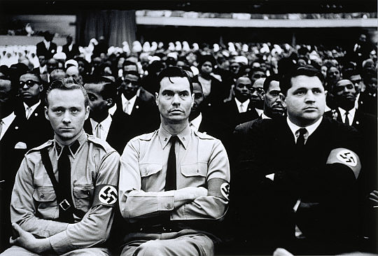

Haley ezt
írja:„Felhívtam Rockwellt a Virginiában, Arlingtonban
található fõhadiszállásán és közöltem vele, hogy a PLAYBOY felkérte õt egy
exkluzív interjúra. Miután megbizonyosodott róla, hogy nem vagyok zsidó, óvatosan
bár, de belement. Nem mondtam meg neki, hogy néger vagyok. Öt nappal késõbb, amint
a taxim beállt Rockwell „Nemzetközi Fõhadiszállása”, egy kilencszobás,
fehér gerendázatú arlingtoni ház (amelyet azóta lelakatolt a Adójövedelmi
Szolgálat [IRS, amerikai adóhatóság], amely jelenleg a nácik anyagi
támogatásainak labirintusát vizsgálja) elé, a háztetõn egy hirdetõtábla-méretû feliratot
láttam meg, amely így szólt: „FEHÉR EMBER HARCOLJ – ZÚZD SZÉT A
FEKETE FORRADALMAT!” Nem tudtam másra gondolni, mint hogy vajon milyen
fogadtatásban lesz részem, amikor megpillantják az én nem-árja fizimiskámat. Nem
kellett soká várnom – a kekibe öltözött ügyeletes õr az ajtónál szinte kõvé
meredt, amint kiszálltam a taxiból és felmentem az bejárati lépcsõn. Amikor
azonosítottam magam, bizonytalankodva betessékelt és mondta, hogy várjak abban a
közeli helyiségben, amit õ „szentélyszobának” nevezett, egy kis, fekete
falú kamrában, amit pislákoló piros gyertyák világítottak meg alig áthatva a
homályt, amerikai és náci zászlókkal volt díszítve, valamint a falakon függtek
Adolf Hitler és George Washington egymás mellé állított portréi, és Rockwellrõl
magáról egy valamivel nagyobb és idealizált portré – egy önarckép. A székem
melletti asztalon volt egy nem túl igényesen nyomtatott és kötött könyv –
Rockwell saját kiadású önéletrajza, a
This Time the
World; épp lapozgattam benne, amikor két egyenruhás rohamosztagos alakja
feltûnt az ajtóban, nácimódra tisztelegtek, és hûvösen közölték velem, hogy Rockwell
parancsnok parancsot adott nekik, hogy a Párt használatában lévõ autók egyikében
vigyenek engem az új személyes fõhadiszállására.
Tizenöt perccel késõbb
velem és a magnómmal hátul, két kísérõvel elöl a kocsi befordult egy szûk, fákkal
szegélyezett útra, lelassított, amint maga mögött hagyott egy – halálfejjel
megpecsételt – „TILOS AZ ÁTJÁRÁS” táblát és egy pórázon tartott
dobermann õrkutyát, és végül megállt egy fehér, 16 szobás tanyaház elõtt, amely a
földszinten és a második emelet magasságában négy láb magas, vörös horogkeresztekkel
volt ékesítve. Úgy egy tucat náci bámult rám jeges tekintettel, mialatt az õrök
elvezettek mellettük, fel Rockwell ajtajáig, ahol egy rohamosztagos fegyverrel az
oldalán nagy szakértelemmel a fejem búbjától a talpamig átmotozott. Karnyújtásnyi
távolságon belül ott volt egy fából készült tároló alkalmatosság, amely
közelharcra alkalmas hosszúságúra fûrészelt vascsöveket tartott. Engem
„tisztának” találva az õr ünnepélyesen kinyitotta az ajtót, belépett,
tisztelgett, „Sieg Heil!”-t kiáltott – ami nyersen
visszhangzott belülrõl – aztán arrébb lépett az ajtóból és egy bólintással
megadta nekem az engedélyt, hogy belépjek. Úgy is tettem.
Mintha csak a
drámai hatás kedvéért tette volna, Rockwell ott állt a szoba túloldalán kezében a
kukoricacsõ pipájával, egy Adolf Hitler arckép alatt. Figyelmeztetve lévén a
négerségemrõl, nem mutatott meglepettséget, ahogy nem is mosolyodott el, nem beszélt,
és nem nyújtott kezet. Ehelyett, miután tetõtõl talpig végigmért egy hosszú
pillanat erejéig, egy ellentmondást nem tûrõ mozdulattal egy ülõhelyhez intett, aztán
leült õ maga is egy közeli könnyed székbe és csöndesen nézett, amíg beállítottam a
magnómat. Rockwellnek ott volt már egy sajátja is, észrevettem, ahogy egy közeli
asztalon járt benne a szalag. Aztán, míg egy tagbaszakadt õr állt vigyázban
köztünk kb. félúton, Rockwell elõvett egy gyöngyberakásos revolvert,
nyomatékosan a széke karfájára helyezte, majd hátradõlt, és – mióta
találkoztunk, most elõször – megszólalt: „Én felkészültem, hogy ha maga
is.” Minden további udvariaskodás nélkül bekapcsoltam a magnómat.
PLAYBOY: Mielõtt elkezdenénk, parancsnok, esetleg elmondaná nekem,
hogy miért tartja azt a pisztolyt ott a könyöke mellett és ezt a fegyveres
testõrt közöttünk?ROCKWELL: Csak elõvigyázatosság. Talán nincs
tudatában ennek, de én szó szerint több ezer, az életem ellen irányuló
fenyegetést kaptam. Ezeknek a legtöbbje futóbolondoktól származik, de néhány közülük nem
az volt; ennek az épületnek a külsején mindenhol golyónyomok vannak. Épp a múlt
héten két gallonos lángoló benzinesüveget dobtak a házra, pont az én ablakom alá.
Interjúk közben itt tartom ezt a pisztolyt elérhetõ távolságban, és ezt az õrt
magam mellett, mert már túl sokszor támadtak meg ahhoz, hogy bármennyire is
kockáztassak. Még sosem rettentett meg egy semmirekellõ sem, de nemrégiben történt,
hogy 17 fickó azt állítva, hogy a helyi egyetemrõl vannak, idejött, hogy
„meginterjúvoljon”; semmiféle kellemetlenség nem történt, de késõbb
rájöttünk, hogy fel voltak fegyverkezve és azt tervezték, hogy letépik a zászlót,
felgyújtják az egész kócerájt és összevernek engem. Csak az a tény, hogy mi fel voltunk
készülve az efféle durva dolgokra, akadályozta meg, hogy ez megtörténjen. Még
sosem kellett senkit se megsebesítenünk, de csak azért, mert gondolom mind
tudják, hogy akármikor készek vagyunk harcolni. Ha ön az, akinek mondja magát,
nincs mitõl félnie.
PLAYBOY: Nem
félek.ROCKWELL: Remek. De csak hogy mindketten tudjuk, hogy hol is
a helyünk, valami mást is kristálytisztán érthetõvé szeretnék tenni, mielõtt
elkezdjük.
Õszinte és nyílt leszek magához. Ön az ön hivatásabeli minõségében van
itt; Én az én hivatásombeli minõségemben vagyok itt. Amíg itt vagyunk, jól fogunk
bánni magával – de látom, hogy ön egy fekete riporter.
Ez nem személyes
dolog, de azt akarom, hogy megértse, hogy én nem keveredek az ön fajtájával, és mi
az ön faját „niggereknek” nevezzük.
PLAYBOY: Sokszor neveztek már „niggernek”, parancsnok, de ez az
elsõ eset, hogy fizetnek is érte. Szóval mondja csak nyugodtan: mi baja velünk,
„niggerekkel”? ROCKWELL: Semmi bajom magukkal. Csak
úgy gondolom, hogy maguk, emberek, boldogabbak lennének ott Afrikában, ahonnan
jöttek. Amikor az elsõ bevándorlóinkat Európában üldözték, õk nem tartottak
ülõsztrájkot vagy efféle nyavalygást; õk kivándoroltak, bementek a vadonba és
felépítettek egy nagy civilizációt.
PLAYBOY:
Azt a négerek segítségével építették fel.ROCKWELL: Segítség ide vagy
oda, a fehér emberek Amerikában egyszerûen sohase fogják engedni maguknak, hogy
teljesen elkeveredjenek velük, akár tetszik, akár nem.
PLAYBOY: A polgárjogi mozgalom célja a jogok és a
lehetõségek egyenlõsítése, parancsnok – nem pedig a faji keveredés, ahogy azt
ön próbálja sejtetni.ROCKWELL: Lehet, hogy az egyenlõség a
meghirdetett cél, de a faji keveredés az, ami a gyakorlatban megvalósul belõle;
és minél durvábban erõltetik ezt maguk, annál dühösebbek lesznek a fehér
emberek.
PLAYBOY: Úgy gondolja,
ön fel van jogosítva arra, hogy a fehér emberek nevében beszéljen?ROCKWELL: Malcolm X ugyanazt mondta, amit én
mondok.
PLAYBOY: Õ egészen
biztosan nem volt abban a helyzetben, hogy a fehér emberek nevében
beszéljen.ROCKWELL: Nos, azt hiszem, a fehérek
többségének nevében beszélek, amikor azt mondom, hogy a faji keveredés egyszerûen
nem fog mûködni. Éppezért úgy gondolom, hogy fognunk kéne a dollármilliárdokat,
amit most elpazarlunk külföldi segélyekre kommunista országoknak, amelyek
utálnak minket, és oda kéne adnunk azt a pénzt a mi saját niggereinknek, hogy
megépítsék a saját civilizált nemzetüket Afrikában.
PLAYBOY: Attól a ténytõl eltekintve, hogy Afrika
területileg már fel van osztva szuverén országok között, keveseket leszámítva majd
mind a 20.000.000 néger ebben az országban itt született amerikai, akiknek pont
annyi joguk van ahhoz, hogy itt maradjanak, mint Önnek, parancsnok.ROCKWELL: Én nem így gondolom. Ha két ember összeférhetetlennek
bizonyul a házasságban, és nem tudnak együtt élni, akkor elválnak; és az
átlag-niggerek tömege egyszerûen nem „illik bele” a modern amerikai
társadalomba. Egy leopárd nem változtatja meg a foltjait csak azért, mert behozzák
a dzsungelbõl és megpróbálják betörni és háziállattá változtatni. Megtanulhatja,
hogy behúzza a karmait, hogy egy kevés maradékot lekunyerálhasson az
ebédlõasztalról; megtaníthatják neki, hogy egy szánalmas, meghúzódó állat legyen, de
ettõl még nem lehet elfelejteni, hogy mindig az lesz, aminek született: egy
vadállat.
PLAYBOY: Mi emberi
lényekrõl beszélgetünk, nem állatokról.ROCKWELL: Mi niggerekrõl
beszélünk, és nekem nincsenek kétségeim afelõl, hogy õk alapjában véve
állatiasak.
PLAYBOY: Milyen
értelemben?ROCKWELL: Spirituálisan. A mi fehér
gyerekeinket megrontják, akár Pavlov kutyáit: külsõ feltétel-reflex alapú
idomítással. Példának okáért, minden alkalommal amikor egy fehér gyerek kefél egy
jót, az autórádió nigger bebopot harsog. Ilyen erõs ingerek hatása alatt nem tart
soká, amíg egy fehér gyerek elkezdi tudat alatt összekötni a primitív hangokat az
intenzív örömérzettel, és így átalakítja a természetes örömöt a szexben egy
természetellenes rajongássá a kaotikus és állatias nigger zenéért, ami elpusztítja
gyermekeinkben a rend és az igazi szépség szeretetét. Ez az, ahogy ti niggerek
megrontjátok a mi fehér gyerekeinket – anélkül, hogy akár csak rájuk tennétek a
mocskos kezeiteket. Na nem mintha azt nem akarnátok.
PLAYBOY: Néha azért ez épp ellenkezõleg történik,
parancsnok.ROCKWELL: Nos, be kell vallanom, a
sajátjaimnak is van egy nagy hibája: a fehér ember lassan túlságosan elpuhányodik. A
niggerek kemény kétkezi munka elvégzésére vannak kényszerülve, és ennek
eredményeképp a legtöbb kannigger akár az egészséges állat: szilaj és kemény,
olyan, amilyennek a természet a férfit szánta. Ha megfigyeljük, hogy egy fehér férfi
átlagpolgár hogyan tölti az idejét: az íróasztal fölé görnyedve, balettezve,
elektromos fûnyírón furikázva, prémmel bevont vécéülõkéjén guggolva, nem lehet nem
észrevenni, hogy sok fehér férfi mennyire puhánnyá és löttyedté engedi magát válni;
fõleg azok a csontos, tésztaképû, fehér békeimádók a hosszú hajukkal, tündéri
ruhájukkal, nagy sárga csíkokkal a gerinctelen hátukon. Melyik normális nõnek
kellene ilyen anyámasszonykatonája? Sajnálatos módon néhányat a mi fehér nõink
közül, fõleg az õrült baloldali állapotok között, amik az egyetemeinken
uralkodnak, olyannyira eltérít a zsidó propaganda, hogy saját ösztöneiket elárulva
inkább egy egészséges fekete kant választanak ezek helyett a csontos, nyámnyila
fehér békeõrültek helyett, akik hemzsegnek az egyetemeinken.
PLAYBOY: Azt akarja mondani, hogy a
néger férfiak szexuálisan felsõbbrendûek a fehér férfiakhoz képest?ROCKWELL: Távolról sem. Az átlagos fehér munkásember, a
fehér férfiak nagytöbbsége, épp olyan tökös és kemény, mint bármelyik nigger,
aki valaha is élt. A fehér értelmiségiek azok, akik engedték magukat
elcsökevényesedni fizikailag, szellemileg, és fõként spirituálisan olyannyira, hogy
már kénytelen vagyok elismerni, hogy egy egészséges nigger szemétszállító
szexuálisan és fizikailag bizonyosan felsõbbrendû egy tésztaképû, csontos, fehér
békeõrülthöz képest.
PLAYBOY:
Másban is felsõbbrendûnek tartja a négereket a fehér férfiakhoz
képest?ROCKWELL: Épp ellenkezõleg –
minden másban alsóbbrendûnek tartom õket a fehér férfiakhoz képest.
PLAYBOY: Ez egy eléggé elnagyolt
általánosítás. Alá tudná támasztani konkrét adatokkal?ROCKWELL: Amikor egyetemeken tartok beszédet, gyakran felteszik nekem ugyanezt a
kérdést. Erre mindig egy saját kérdésemmel felelek: hogy döntik el az egyetemek,
hogy kik a jó és kik a rossz tanulók? Hát a teljesítmény alapján! Nézzük csak a
történelmet, vizsgáljuk meg a különbözõ fajokat: a kínaiak jól teljesítenek –
hatalmas civilizációt teremtettek. Ugyebár az összes fehér faj is jól teljesít.
Ellenben a nigger faj az egészen szoros közelmúltig abszolúte semmit nem alkotott.
PLAYBOY: Mennyire szoros
közelmúltra gondol?ROCKWELL: Az elmúlt
20-30 évre.
PLAYBOY: És
mi van annak a több millió afrikai négernek és leszármazottaiknak –
valamint az egész világról jött mindenféle színû bevándorlóknak – a
segítségével, azokéval, akik segítettek megalapítani és felépíteni ezt az
országot?ROCKWELL: Nem akarom ezt semmibe venni, de az az igazság,
hogy a niggerek minden segítsége majdnem teljes egészében szolgai és kétkezi munka volt.
A legnagyobb részét lovak is elvégezhették volna, vagy jól beidomított majmok
ugyanazokról a fákról, amelyekrõl õket szedtük le még Afrikában. Azóta néhány új
trükköt is megtanultak – de csak olyanokat, amelyeket a fehér embertõl
lestek el.
PLAYBOY: Egyes
nemrégiben feltárt régészeti leletek alapján kimutatták fejlett fekete afrikai
civilizációk létezését, melyek századokkal az ehhez fogható európai kultúrák hajnala
elõtt álltak fenn.ROCKWELL: Hogy ha akkor annyival
elõrébb jártak nálunk, miért lövöldözgetnek egymásra még mindig köpõcsövekbõl kis
nyilakat, mialatt mi rakétákat lövünk fel a Holdra?
PLAYBOY: Az amerikai ûrprogram nem szegregált
projekt, parancsnok. Sok néger dolgozik a NASA-nak és az
ûriparban.ROCKWELL: Ez csak az én igazamat bizonyítja. Néhány niggert, akár
az idomított csimpánzokat, a mi faji-keveredés-párti elnökeink és a szövetségi
kormányunk felprotezsált és beleerõszakolt olyan dolgokba, mint az ûrprogram; de a
niggerektõl nem származik egy olyan ötlet se, ill. nem õk hozták létre az olyan
fantaszikus szervezeteket, amelyek révén embereket tudunk az ûrbe juttatni. A niggerek
a NASA-ban olyanok, mint a csimpánzok, amelyek megtanultak biciklizni. Néhány
beidomított biciklizõ majom nem bizonyítja, hogy a csimpánzok fel tudnák találni, meg
tudnák építeni, vagy akár csak gondolkodni tudnának a biciklirõl. A tény az,
hogy az átlag nigger nem olyan intelligens, mint az átlag fehér ember.
PLAYBOY: Nincs genetikai vagy
antropológiai bizonyíték, ami ezt megalapozná.ROCKWELL: Tudom, most azt fogja mondani, hogy tud nekem mutatni többezer
intelligens niggert és hülye fehér embert. Nagyonis tudatában vagyok annak, hogy
mindkét oldalon vannak kivételek. Én csak azt mondom, hogy az ön népe átlaga az én
népem átlaga alatt áll; és a tiszta feketék még lejjebb vannak alattunk. Az élõ
bizonyítékom erre épp itt ül elõttem.
PLAYBOY: Hogyha rám céloz, én távol állok a tiszta feketéktõl – ahogy
ön is láthatja.ROCKWELL: Hát épp ez az: ön egy
intelligens ember; öröm magával beszélgetni. Maga azonban nem tiszta fekete,
mint az õsei Kongóban. Szóval, ezzel talán megsértem magát, de nem bájcsevegni
jöttünk ide: bizonyára kellett lennie egy fehér embernek valahol a családjában,
különben maga nem lenne fekete helyett barna. Igaz?
PLAYBOY: Igaz.ROCKWELL: Nos, én
azt mondom, hogy a maga intelligenciája az én fajtám vérébõl fakad. Akárhányszor
körbemutogatnak egy okos niggert és azt mondják: „Látjátok? Nézzétek,
milyen zseniálisak a niggerek!”, akit ilyenkor mutatnak, az általában egy
részben fehér ember egy kis nigger vérrel az ereiben. Ez nem bizonyítja, hogy a
niggerek olyan nagyszerûek lennének. Ellenkezõleg; azt bizonyítja, hogy a fehér vér
egy rész-niggert intelligensebbé tehet.
PLAYBOY: Ez nem bizonyíték, parancsnok! Tud mutatni bármilyen
hiteles iratot, amivel alátámaszthatja nézeteit? ROCKWELL: Egy
pszichológus, G.O. Ferguson, készített egy tanulmányt a négerekben a fehér vér
mennyisége és az intelligencia összefüggésérõl. Tesztelte az összes virginiai
néger iskolás gyereket és bizonyította, hogy a teszteken a tisztán fekete négerek
körülbelül 70 %-át, az egy fehér nagyszülõvel rendelkezõ négerek 75%-át érték el a
fehérek eredményének. A két fehér nagyszülõvel rendelkezõk még jobban
teljesítettek, akiknek pedig három fehér nagyszülõjük volt, majdnem olyan
eredményesek voltak, mint fehér társaik. Mivel ezen néger gyerekek mindegyike hasonló
körülmények között élt, mint a többi néger a tesztek eredményeiben látható
jelentõs különbséget nem foghatjuk a környezeti körülményekre.
PLAYBOY: Könyvében - A Profile
of the Negro American – a világhírû szociológus, T.F. Pettigrew
egyértelmûen kijelenti, hogy a fehér elõdök mennyisége semmilyen módon nem függ össze
a négerek I.Q. eredményével. Pettigrew szerint a valaha dokumentált legokosabb
néger – 200-as I.Q. eredménnyel – egyáltalán nem rendelkezett fehér
õsökkel.ROCKWELL: A tény, hogy tud mutatni egyetlen
teljesen feketét, aki különb nálam, nem gyõz meg arról, hogy az átlag nigger is
különb lenne. A megdöbbentõ tény az, hogy minél „világosabbak”,
annál okosabbak és minél feketébbek, annál butábbak.
PLAYBOY: Ez egy vélemény, Parancsnok, nem
tény. Alá tudja támasztani bármiféle konkrét bizonyítékkal?ROCKWELL: Egy élet tapasztalata a bizonyíték. Sosem találkoztam olyan
fekete négerrel - igazán feketére gondolok, aki már lilának tûnik -, aki úgy tud
beszélni, gondolkozni, ahogy mondjuk, ön tud. Ha majd egyszer találkozom, talán a
véleményem is megváltozik. Az összes igazán fekete néger olyan, mint amilyeneket
Tamás bátyáknak neveznek, vagy felforgatók, vagy csak csavargók, fosztogatók,
erõszakolók.
PLAYBOY: A
szociológusok egyetértenének abban, hogy a négerek nagy többsége – sötét
bõrüek avagy sem – nem illik egyik kategóriába sem.ROCKWELL: Mint mondtam, mindig vannak kivételek, de mindenki tudja,
hogy a kivétel erõsíti a szabályt. Az evolúcióból következik, hogy ha a felsõbbrendû
keveredik az alsóbbrendûvel, az eredmény hosszú távon a kettõ között lesz, tehát
alacsonyabb rendû, mint az eredeti felsõbbrendû csoport – más szóval
elkorcsosult.
PLAYBOY: A
„felsõbbrendû” és „alacsonyabb rendû” szavaknak semmi köze a
genetikához, Parancsnok, csakúgy, mint az elkorcsosulásnak. Minden szakértõ
álláspontja, hogy a világ különbözõ embercsoportjai genetikailag nem különíthetõek el
egymástól. Más szóval mindenki, a különbözõ rasszokhoz tarozó szülõk leszármazottjai
is, egyenlõnek születik.ROCKWELL: Ne nevettessen, kérem! Nem
tudja, hogy ezt az egész egyenlõség-marhaságot egy zsidó antropológus, Franz
Boas találta ki a Columbia Egyetemen? Boas-t egy másik zsidó, Gene Weltfish
követte, szintén a Columbiáról. Jelenünk zsidó szakértõje, aki az
egyenlõséget prédikálja, egy szintén zsidó, Ashley Montagu. Bármely antropológust, aki
ki meri mondani az igazságot, amit akármelyik egyszerû, józan paraszti ésszel
megáldott ember is tud, hogy a fajok minõségben különböznek, egyszerûen
ellehetetlenítik, nem publikálhat, nem dolgozhat az egyetemeken, és egyszerûen nem tud
megélni. Nem is hallani semmit arról az oldalról. Carleton Putnam írt egy
csodálatos könyvet
Race and Reason címmel,
amiben rengeteg tudományos bizonyítékot mutat be, amelyek alátámasztják az
álláspontomat, miszerint a néger faj intellektuálisan eredendõen alacsonyabb rendû
a fehér fajnál.
Ez az egyenlõsdi-marhaság egyenesen a Szovjetunióból
származik, a liszenko-i biológiából, ami a kommunista Liszenko nevéhez fûzõdik, aki azt
állította, hogy a környezetet megváltoztatva egyik növény magjából másik növényt
termeszthetünk. Ez az a tan, ami elpusztítja a társadalmunkat - mert hamis. Nem lehet
kukoricából búzát termeszteni a környezet megváltoztatásával.
PLAYBOY: Nem lehet kukoricából búzát
termeszteni, bármit is változtassunk meg. Mindenesetre itt most emberi lényekrõl
van szó, nem élelmiszerekrõl.ROCKWELL: Nem
akarom tovább csûrni-csavarni. A lényeg, hogy úgy gondolom, a zsidók tudatosan
ferdítették el az antropológia, a biológia és a genetika tudományát, hogy eljussanak
ehhez a hamis következtetéshez – és ezáltal elpusztítsák a kiváló fehér
fajt.
PLAYBOY: Milyen hamis
következtetéshez?ROCKWELL: Ahhoz a teljes mértékben
téves elképzeléshez, hogy az öröklésnek semmi köze például ahhoz, hogy a
négereknek alacsonyabb az átlagos iskolai végzettségük és nagyobb arányban
kerülnek ki közülük bûnözõk, mint a fehérek esetében?
PLAYBOY: A genetika szerint nincs is.
Mindenesetre, eme feltételezés elfogadása miért vezetne a fehér faj
pusztulásához?ROCKWELL: Azért mert abba a téves hitbe ringatja az
embereket, hogy a niggerek inkább csak „hátrányos helyzetûek”, mint
születetten alacsonyabb rendûek; és hogy fel tudnak zárkózni, ha beengedjük õket
az éttermeinkbe, tanulhatnak az iskoláinkban, beköltözhetnek a szomszédainkba.
Ez elkerülhetetlenül maga után vonja, hogy keveredünk velük, ami pedig a
korcsosuláshoz, majd a fehér faj megsemmisüléséhez vezet.
PLAYBOY: Azt mondta, hogy az egész összeesküvés
mögött a zsidók állnak. Õk maguk is fehérek, mi elõnyük származhat hát a saját
fajtájuk tönkretételébõl?ROCKWELL: Õk nem
fognak keveredni, ahogy azt mi tesszük. Úgy hiszik, õk túl tiszták, kiválasztottaknak
tartják magukat – a világ irányítására választottaknak. De nem képesek, csak
alacsonyabb rendû lények lakta világot uralni. Mindaddig, amíg a fehér ember
tiszta, nem érhetnek célt. De mihelyst a fehér ember elfogadja a keveredést a
feketékkel, a zsidók feléjük kerekedhetnek.
PLAYBOY: Hogyan?ROCKWELL: Már õk irányítják a négereket. A Fekete Muszlimokat kivéve
gyakorlatilag a zsidók irányítják az összes nagyobb emberjogi szervezetet.
PLAYBOY: Önt tévesen
informálták, Parancsnok. Egyet kivéve – az NAACP-t – az összes emberjogi
csoportnál négerek vannak a kulcspozíciókban.ROCKWELL: Õk csak a kirakat emberek. A zsidók mozgatják a szálakat a háttérben
és õk tartják kezükben a pénzeszsákokat is.
PLAYBOY: A zsidók, akik ezekhez a csoportokhoz tartoznak,
illetve közremûködnek, kizárólag tanácsadói minõségben vannak jelen. ROCKWELL: Önt tévesen tájékoztatták. Mint már kezdtem
mondani, a zsidók a fehér embereket is irányítani akarják, csakúgy, mint ahogy a
négereket is irányítják. Miután a fehérek keveredtek a feketékkel, a fehérek is
könnyen irányíthatóvá válnak, a négerekhez hasonlóan.
PLAYBOY: Miért?ROCKWELL: Mert ha a felsõbbrendût keverjük az alsóbbrendûvel, ahogy már
mondtam, az eredmény alacsonyabb rendû lesz – félúton a kettõ között. A zsidók
túljárnának az eszén, kijátszanák, ezáltal manipulálhatnák az elkorcsosult fehér
embert, ahogy azt már teszik a négerekkel. Errõl szól ez az egész, úgymond
emberjogi mozgalom; és hajlamosak megúszni, ha országunk jó fehér keresztényei nem
ébrednek fel idõben és nem fogunk össze, hogy helyre állítsuk a dolgok természetes
rendjét, mielõtt még túl késõ lenne.
PLAYBOY: És mi a dolgok természetes rendje?ROCKWELL: Elkülönülés. A természetben is az egy fajhoz
tartozó lények alkotnak csoportokat. A csimpánzok nem páviánokkal élnek együtt,
hanem csimpánzokkal. Ez a rend az emberekre is érvényes. Még a teljesen integrált
fõiskolákon is azt tapasztaltam, hogy a négerek más négerekkel ülnek egy asztalhoz,
és a fehérek is fehérekkel. Úgy gondolom, ez a természetes, és bármely
próbálkozás, mely ezt a tendenciát akarja eltéríteni, a természet ellen történik.
PLAYBOY:
Ön nem vette figyelembe az erkölcsi és alkotmányos értelemben is nagyon fontos
különbséget aközött, hogy valaki saját döntése alapján él együtt saját rasszához
tartozóval, vagy azért, mert kényszerítik rá. Ha hagyjuk az embereket dönteni,
lennének, akik keverednének, lennének, akik nem; és az amerikaiak nagy része szerint ennek
így kell lennie.ROCKWELL: Ez így nagyon szépen
hangzik, meg is hatódtam. De hogy néz ki a dolog a gyakorlatban? Minden esetben,
amikor az ön által védett emberek költöznek a környékünkre, fehér emberek
költöznek el; egyre gyakoribbak az erõszakos megnyilvánulások, amiket békés, jól
szituált fehér férfiak követnek el - akik még sosem tettek ilyet - felháborodva
a négerek beözönlésén.
PLAYBOY: Ez erõs túlzás, Parancsnok. A felmérések azt mutatják, hogy
mind-mind kevesebb fehér ember költözik el, amikor négerek költöznek a fehérek lakta
környékekre; és valójában nagyon ritkán történnek olyan erõszakos cselekmények,
amelyek okai visszavezethetõek lennének a négerek beköltözésére. A legtöbb esetben a
kezdeti feszültségek után az új lakókat szép lassan elfogadják.ROCKWELL: Nem tudom milyen környékeken nézett körül, de
az erõszak és ellenségeskedés általánosságban tapasztalható, nem csak kirívó
esetekben. És az egész kétszeresen jelentkezik, ha az én embereim közül költözik
valaki a Watts-hoz hasonló helyekre. Az ön emberei nem csak lázonganak, hanem
megpróbálják megölni. Ez természetes. Az ösztöneik jönnek elõ, ahogy mindig is fognak.
Bármely arra irányuló próbálkozás, hogy elnyomjuk, elfedjük eme ösztönöket, vagy
tagadjuk létüket, hiábavaló, és sikertelenségre van ítélve. A természet nem
változik.
PLAYBOY: A négerek
ellenséges érzülete a nácik irányában nem igazán tekinthetõ bizonyítéknak az
integráció természetellenes voltára. A náciellenes erõszak különben sem csak a
négerekre jellemzõ.ROCKWELL: Igaza van, a
zsidókra sokkal inkább.
PLAYBOY:
Ön azt állította, hogy a többek között Watts-i, Harlem-i és Rochester-i zavargások
hátterében zsidók állnak. Van erre bármiféle bizonyítéka, amivel alátámaszthatja a
vádakat? ROCKWELL: Azt nem mondtam, hogy
õk kezdték; annyit mondtam, hogy õk tervezték meg. Elõször is, õk mondták a
niggereknek, hogy „Nektek nem kell engedelmeskednetek a törvényeknek, amelyek
nem tetszenek nektek”, ahogy Martin Luther Nigger is hirdeti. Ha egy zsaru
letartóztat egy négert, az „rendõri brutalitás”. És azt mondják
nekik, vágjanak vissza. Ha a rendõr el akarja látni a feladatát, a zsidók által
megvezetett niggereknek ki kell szabadítani a letartóztatottat a brutális rendõr
kezei közül. A zsidók pszichológiai bombává szították õket – és ha jön a
zsaru és teszi, amit tennie kell, az olyan, mintha égõ gyufát tartana a
gyújtózsinórhoz. Bumm – felrobban az egész! Ahogy az történt Watts-ban és
Harlemben is.
PLAYBOY:
Watts-ban és Harlemben is az anyagi károk nagy részét zsidó tulajdonban lévõ
üzletek, boltok szenvedték el. Miért szítanának a zsidók erõszakot, melynek
eredményeképpen a saját vagyonuk semmisül meg?ROCKWELL: Az csak
véletlen, hogy a gettóban levõ négerekbõl élõ üzletemberek nagy része zsidó. A
befolyásos, nagy zsidók hajlandóak feláldozni a kisebbeket, ahogy a hadvezér is
feláldozza a seregének egy részét, hogy megnyerje a háborút.
PLAYBOY: De mit nyerhetnek a zsidók azzal, hogy
felkeléseket szítanak?ROCKWELL: Õk született
bajkeverõk. Egyszerûen nem tudnak nem megjelenni és felkavarni mindent és végül
mindig õk szenvednek miatta. Mindig! De egyszerûen nem tudják abbahagyni. Teljes
mértékben irracionálisak. Az egész liberalizmusukkal és a prédikációikkal, amikben
egyenlõ jogokat hirdetnek a niggereknek, csak zûrzavart és káoszt idéznek elõ,
ami végül elemészti õket. Az alkoholforgalmazók már most kapják. A múlt nyáron az
összes zsidó boltos visított, „Elég! Hallgassatok meg! A barátaitok
vagyunk!” – miközben a niggerek agyba-fõbe verték õket. És ez csak a
kezdet, csak ízelítõ abból, ami még jönni fog. Erre a nyárra a Watts-inál jóval
szörnyûbb rasszista erõszak megjelenését jósolom – mindezt a két bajkeverõ
alacsonyabb rendû rassz miatt.
PLAYBOY: A négerek alacsonyabb rendûségét – amint azt nemrég kifejtette
– a mentális teljesítményükre alapozza. A zsidókat is ugyanezért tartja
alacsonyabb rendûnek?ROCKWELL: Sosem vádoltam a
zsidókat azzal, hogy értelmileg ne tudnának teljesíteni. Sõt, úgy gondolom, nagy
esély van arra, hogy mentális képességeiket illetõen mindenki másnál jobbak.
Véleményem szerint egy átlag zsidó élesebb eszû, mint az átlag nem zsidó, mert
hosszú évekig az ügyeskedésbõl élt. Következésképpen egy olyan zsidó faj alakult
ki, amely mentálisan jobb képességû, mint mi.
PLAYBOY: Akkor milyen értelemben tartja a zsidókat
alacsonyabb rendûnek?ROCKWELL: Lelki értelemben.
Úgy gondolom, hogy egy emberi lénynek, ahhoz, hogy sikeres legyen, egyúttal nagy
dolgokat vigyen véghez – feltaláljon egy rakétát, vagy bármit -, kell lennie
valaminek, amiben hihet, ami több mint a saját túlélése, ami több mint saját maga. A
zsidóknak nincs ilyenjük. Már olyan rabbijuk is van, aki nyíltan bevallja, hogy
ateista. Õ Rabbi Sherwin Wine, a Michigan-i Birminghambõl.
PLAYBOY: Talán ön nem tudta, hogy
az Egyház jelenlegi, Istentõl elforduló irányvonala a protestáns papságban
gyökeredzik. Mindenesetre Wine rabbi személyes meggyõzõdése nem elég meghatározó
ahhoz, hogy a zsidók hitét általánosan jellemezze. A zsidók nagy része továbbra is
hisz Istenben, ahogy azt a Tóra tanítja.ROCKWELL: A zsidók sokat beszélnek
Istenrõl. De valójában az õ istenük, ahogy Marx is mondta, a pénz. Készpénz! Ez az,
ahol a zsidók elbuknak, az idealizmus hiánya. Többségük meggyõzõdéses
materialista. Bárhova is mentek a zsidók, gyanútlan, barátságos vidékekre
költöztek, és azonnal elkezdték kizsákmányolni az embereket és az erõforrásokat.
Azt hitték, üzlettel foglalkoznak, de valójában elevenen emésztették fel az
országot. Aztán amikor az emberek megelégelték a gonoszságukat, kapzsiságukat és
elzavarták, vagy megölték õket, mindig azt kiabálták, hogy õket
„üldözik”. De ez nem üldöztetés. Ez önvédelem.
PLAYBOY: Arra utal, hogy Hitler igazoltan
pusztított el 6 000 000 európai zsidót? ROCKWELL:
Egy percig sem hiszem, hogy a 6 000 000 zsidóból akár egyet is Hitler irtott volna
ki. Sosem történt meg. Akarja, hogy bebizonyítsam?
PLAYBOY: Tessék. ROCKWELL: Rendelkezésünkre állnak a számok a zsidók létszámát
illetõen 1939-bõl, a második világháború elõtti idõbõl: 15 688 259; valamint a
második világháborút követõen élõ zsidók létszáma: 18 000 000. Ha a második
világháború utáni számot vesszük és hozzáadjuk az állítólag elgázosított hatmilliót,
összesen 24 milliót kapunk eredményül, ami azt jelentené, hogy ötven százalékos
népességnövekedés történt a zsidók körében egy körülbelül ötéves idõszak alatt.
A szexben mégoly jó zsidók sem tudnak ilyen gyorsan sokasodni. Látja, így a
saját számadataik árulják el a zsidók hazugságait.
PLAYBOY: Megnevezné az említett
statisztikák forrását? ROCKWELL: A háború elõtti
számok az 1947-es Világalmanach 219. oldaláról, a háborút követõ idõszak adatai
pedig az 1948. február 22-i The New York Times-beli Hanson Baldwin cikkbõl.
PLAYBOY: A népességre
vonatkozó adatokat félretéve, tagadja a dokumentációs fényképes bizonyítékok
érvényességét, melyek a gázkamrákat és a koncentrációs táborok árkaiban, halmokban
álló több ezer testet mutatják? ROCKWELL:
Nyomatékosan tagadom, hogy létezik bármilyen érvényes bizonyítéka annak, hogy a
nácik módszeresen gyilkolták a zsidókat. A fényképek, amelyeket halott zsidók képeként
mutattak be, tulajdonképpen német civilek holttestei – többnyire asszonyoké
és gyermekeké valamint menekülteké, akik a szövetségesek egyéjszakás drezdai
bombázása alatt haltak meg – itt 350 000 ártatlan embert mészároltak le.
PLAYBOY: Ki azonosította
ily módon e képeket? ROCKWELL: Matt Koehl, a
kutatási vezetõm, aki azt mondja, hogy az úgynevezett náci atrocitás-fényképek
háttérépületei drezdai épületek.
PLAYBOY: Nem ismerjük el hitelesnek a kutatási vezetõjének megállapításait.
ROCKWELL: Meggyõzõ bizonyítékaim vannak arra
nézve, hogy a „dokumentum” erejû fényképek némelyike egész egyszerûen
tiszta csalás. Egy zsidók által kiadott folyóiratban, mely szerte Amerikában
kapható, mutatnak egy üveget, melyben a németek által, feltehetõen szegény halott,
elgázosított zsidókból fõzött szappan található.
PLAYBOY: Milyen bizonyítéka van arra, hogy állítja,
ez hamis? ROCKWELL: A józanész. Az a
szappan bármibõl készülhetett, akár egy tucat olvasztott Lifebuoy szappanból. De itt
van a végsõ érvem, hogy igazából mennyire nevetséges az egész náciellenes irodalom
melyet olvasott: egy, 1958 márciusában, a Sir magazinban megjelent cikk, mely
azt taglalja, hogyan gázosítottak el, égettek meg és gyilkoltak meg mindenkit a
nácik. Egy „volt SS tizedes” elbeszélése alapján, a magát „Lew
Cor”-ként jegyzõ amerikai hadsereg alhadnagyának. Nos, „Lew
Cor” egyszerûen Rockwell visszafele olvasva. Én írtam – tesztként. Az
eszembe jutó, lehetõ elrugaszkodottabb hazugságokat írtam le! És tessék: mind itt
vannak kinyomtatva ebben a folyóiratban. Nézze a fényképeket! Állítólag mind a
cikkben szereplõ náci áldozatok fényképei – áldozatok, akiket én találtam
ki!
PLAYBOY: Parancsnok, az Ön
- náci kegyetlenkedéseket illetõ - hazudozási hajlama nem bizonyítja azt, hogy a
zsidók ugyanezt tették volna. A több száz börtöntábort túlélõ szemtanú náci
atrocitásokat igazoló vallomását is elutasítja? ROCKWELL: Eskü alatt
tett írásbeli okiratom van egy zsidó orvostól, egy Auschwitz-i rabtól, aki azt
mondja, hogy ott nem voltak gázkamrák.
PLAYBOY: Az Ön birtokában van ez az okirat? ROCKWELL: Elküldöm a fénymásolatát. Úgy hiszem, a gázkamrákat
a második világháború után építették zsidó katonatisztek. Azt biztosan tudjuk,
hogy többnyire zsidó katonatisztek szabadították fel a táborokat. Ezek közül
többen kémelhárításnak dolgozó zsidó katonatisztek voltak, akiket a nürnbergi perrel
bíztak meg. Õk kínoztak meg ártatlan nácikat a lehetõ legaljasabb módszereket
használva, hogy bárminemû koholt bizonyítékokra tegyenek szert.
PLAYBOY: Bizonyítani tudja e
vádakat? ROCKWELL: Sok olyan esetrõl van
tudomásom, amikor az amerikai személyzet visszavonult a használt módszerek
gusztustalansága miatt.
PLAYBOY: Ez nem bizonyítja azt, hogy kínzást használtak volna hamis
tanúvallomás elérésére. Különben még nem mondta el, hogy elutasítja-e a
szemtanúk náci atrocitásokról szóló vallomásait. ROCKWELL: Természetesen elutasítom. Már számlálni sem tudom, hányszor
jártam bíróságon miután zsidó bandák rámtámadtak és megvertek, azért, hogy azután
ugyanezek a zsidók ott álljanak a tanúk padján, azt mesélve könnyekkel az
arcukon, hogy én hogyan támadtam meg õket. A zsidók a világ mesterfokozatú hazudozói!
Ebben zseniálisak. Miért van az, hogy ha egy zsidrák ül a tanúk padján, akkor még
hagymára sincs szüksége a síráshoz?
PLAYBOY: Azt beszélik, van egy modell gázkamrája a
fõhadiszállásán. Igaz ez? ROCKWELL: Nem, de
van egy villamosszékünk a Sing Sing-ben, mely már nagy szolgálatot tett nekünk a
Rosenbergek kivégzésében. Több százezer hasonló Rosenberg szaladgál Amerikaszerte,
akiknek sütögetésre, vagy elgázosításra lenne szükségük.
PLAYBOY: A „több Rosenberg” alatt
több zsidót vagy több kommunista kémet ért? ROCKWELL: Több kommunista zsidót. Gyakorlatilag egy és ugyanaz a két dolog.
PLAYBOY: Azt akarja
mondani, hogy sok zsidó kommunista, vagy azt, hogy sok kommunista zsidó? ROCKWELL: A „kommunista zsidó” kifejezést
pontosan ugyanúgy használom, mintha azt mondanám “olasz gengszter”. A
legtöbb olasz nem gengszter, de mindenki tudja, hogy a maffia javarészt olasz.
Nos, az én tapasztalatom, hogy a kommunizmus legalább annyira zsidó, mint amennyire
a maffia olasz. Tény, hogy szinte az összes elítélt kommunista kém ateista zsidó volt
a Rosenbergekhez hasonlóan. A nemzetközi kommunizmust egy Karl Marx nevû zsidó
találta ki, és azóta is javarészt zsidók vezetik a mozgalmat, például Trockij.
PLAYBOY: Sztálin, Hruszcsov,
Brezsnyev, Kosigin és Mao Ce-tung többek között, biztosan nem voltak zsidók.ROCKWELL: A zsidók manapság többnyire a vörösök kémei és
agitátoraiként mûködnek. Vigyázzon, nem azt akarom mondani, hogy nincsenek nagyszámban
zsidók, akik megvetik a kommunizmust.
PLAYBOY: De mégis állítja, hogy többszázezer kommunista zsidó
van Amerikában? ROCKWELL: Talán ennél is több.
PLAYBOY: Milyen bizonyítéka
van a számadat alátámasztására? ROCKWELL: Egyszerû statisztika. 14 fõ az Egyesült Államok bíróságain
elítélt 16 fõbõl zsidó fajú volt, egy további pedig nigger. A Medina bíró
törvényszékén elítélt 21 kommunista vezetõbõl 19 zsidó fajú volt. Az
úgynevezett „másodhegedûs politbüro-hoz” tartozó vezetõk több mint 90%-a
zsidó volt.
PLAYBOY: Az
elítélt zsidó kémek összlétszáma 33. Ez még nagyon messze van a többszázezertõl.
ROCKWELL: Van még további fekete-fehér bizonyíték
is. A zsidók még saját kiadványaikban sem tagadják a kommunizmus zsidóságát. Ezt
bárki megtekintheti. Például, a legnagyobb példányszámú kommunista újság Amerikában
nem a The Worker, hanem egy jiddis lap, a The Morning Freiheit. Bármely amerikai
hozzájuthat e lap példányaihoz, és az angol részekben elolvashatja a nyílt kommunista
hazaárulást, melyrõl prédikálnak.
PLAYBOY: Parancsnok, a The Morning Freiheit nézeteirõl
természetesen nem mondható el, hogy az amerikai zsidók többségének nézeteit tükröznék.
Tudna-e egy kimondott példát adni, az amerikai zsidók bármely szóvivõjétõl
elhangzott pro-marxista nyilatkozatra? ROCKWELL:
Csak egyet? Könnyû lesz. Vegyünk egy nyilatkozatot, melyet Stephen Wise rabbi
adott. Õ az amerikai zsidóság egyik vezetõ szóvivõje.
PLAYBOY: 1949-ben meghalt. ROCKWELL: Nos, halála elõtt azt írta: „Néhányan
kommunizmusnak nevezik, én pedig judaizmusnak”. Ez egy közvetlen idézet. Azt
mondanám, ez elég egyértelmû, nem?
PLAYBOY: Tudja-e igazolni ezen állítását? ROCKWELL: Természetesen. Elküldöm majd
Önöknek.
PLAYBOY: Van-e
bármilyen kézzelfogható bizonyítéka a vád megalapozására? ROCKWELL: Statisztikai mintát elfogad bizonyítékként?
PLAYBOY: Hadd halljuk.
ROCKWELL: Az általam ismert zsidók nagy hányada,
legalább 50, de akár 85 vagy 90 százalékuk is vöröspárti – akár párttagsággal
rendelkezõ kommunista vagy szimpatizáns, a kommunizmust nyíltan és szánt szándékkal
segítõ, arra felbujtó - a jelenlegi kormányzat kommunisták általi megbuktatását
támogatják. Segédkeznek a kommunista ellenségeinknek, amerikaiak
meggyilkolásában, vagy tudatosan tüntetik el azon jogi bizonyítékokat, melyek a
hazaárulók bûnösségét igazolnák.
PLAYBOY: Következtetéseit az Ön által személyesen ismert
zsidók politikai szimpátiájáról aligha fogadhatjuk el állításainak bizonyítékaként,
parancsnok. Vegyük csak például a „többszázezer” zsidót, akik Ön
szerint vöröspártiak. Mindenesetre azt mondja, hogy „meg kellene sütni vagy
gázosítani kellene” õket. Milyen alapon? ROCKWELL: Árulás.
Mindenkit - nemcsak a zsidókat - akinél kommunizmus pártolás, hazaáruló
cionizmus gyanúja merül fel vagy bármi más bomlasztó támadás országunk és népünk
ellen, azt ki kell hallgatni, le kell tartóztatni és a bizonyítékokat a bíróság
elé kell tárni. Ha vád emelhetõ ellenük, bíróság elé kell állítani õket, ha pedig
bûnösnek találtatnak, meg kell õket ölni.
PLAYBOY: Hogyan? ROCKWELL: Nos, ne feledje, hogy
több százezer zsidó árulót kell majd kivégezni. Nem látom, hogyan tudna ennyi
embert elektromos székbe ültetni, mielõtt még megöregszenek és meghalnak, ezért
számomra úgy tûnik, hogy a tömeges gázkamrák lesznek az amerikai kommunista
árulók problémájának egyedüli megoldása.
PLAYBOY: Az Ön gázkamrás javaslata, mint
„megoldás a kommunista áruló problémára” emlékeztet a nácik által
Németországban intézményesített „zsidókérdés végsõ megoldására”. Újabb
antiszemita keresztes hadjáratot tervez a Hitler által lefektetett irányelvek mentén?
ROCKWELL: A keresztes hadjárat, amit én tervezek
sokkal nagyobb horderejû, mint az elõbbi. Németországban, Hitler egy helyi
„laborkísérletet” végzett mely ideológiát szolgáltat nekem, éppúgy ahogyan
Marx tette azt Leninnek. Az én feladatom, hogy ezt az ideológiát világmozgalommá
tegyem. Ezt sosem fogom elérni pusztán a tiszta árja elmélet hirdetésével, ahogyan
Hitler tette; az észak-germán népek felsõbbrendû fajjá dicsõítésével. Bár van egy
nagyon könnyen azonosítható felsõbbrendû faj: a fehér faj. Világszerte
megtalálható. Ezért harcolok, a fehér keresztény szolidaritásért, nem pedig az
árja eszméért. Hosszútávon pedig gyõzedelmeskedni szeretnék Görögország,
Németország, Olaszország, Anglia, Kanada, Franciaország, Spanyolország, Latin
Amerika, Rodézia, Dél-Afrika és a Föld összes fehér keresztény országának népei
felett. Megpróbálnám összeolvasztani a világ összes fehér, keresztény országát
egy faji, vallási és politikai alapú katonai egységbe. Szeretném, ha esetleg ez a
szervezõdés hatalmi fölényre tenne szert.
PLAYBOY: A nem fehér, nem keresztény népek felett?
ROCKWELL: Az afro-ázsiai tömb felett, mely
számomra az alapvetõ veszélyt testesíti meg a bolygónk számára. Rosszabb, mint egy
bomba! Ezek az emberek valami olyasmivel rendelkeznek, amit mind a kommunizmus, mind
pedig a demokrácia elvesztett. Fanatikusak! Tele vannak ezzel a vad tekintetû
hittel és életerõvel, amit a fehér ember fokozatosan elvesztett. Ha valaha is
összefognak, majdnem egy milliárd áll majd szemben a fehér emberrel – hét az
egyhez arányban. Oly gyorsan szaporodnak, hogy az esélyek nemsokára tíz vagy akár
tizenöt az egyhez lesz. Amikor ez a milliárd színesbõrû rendelkezni fog majd az
atom- vagy hidrogénbombával, amit a Vörös Kína hamarosan el is ér, eltörölhetünk majd a
föld színérõl néhány százmilliót belõlük, de még mindig rengeteg lenne az
utánpótlás. A fehér faj nem tudna sokáig ellenállni ennek az erõnek.
Eltörölnének! A félig-állat színesbõrûek hatalmas tömegei végigsöpörnének rajtunk, és
mi semmit sem tehetnénk ez ellen. Ez, a mennyiség végsõ gyõzelme lenne a
minõség felett, hacsak a fehér emberek hamarabb össze nem fognak. Hatalmas bajban
leszünk, ha õk egyesülnek elõbb. De vésse az eszébe: lesz majd egy armaggedoni
csata, és ez nem a kommunizmus és demokrácia ütközete lesz, hanem a színesbõrû
milliók és a kis létszámú, de elit fehér csapatok között dõl majd el. Ideológiai,
gazdasági és filozófiai nézetek egyáltalán nem vagy csak nagyon kismértékben
játszanak majd szerepet. Amikor elérkezik majd az idõ, ami távolabb van, mint
gondolnánk, tervezem, hogy készen állok majd – nemcsak saját magam megvédésére
– hanem a fehérek millióinak vezetésére, azokéra, akik ma esztelenül
állítják, hogy nem tudják, mi történik.
PLAYBOY: Országos létszámára vonatkozó becslések szerint 25 és
100 közötti tagja van. Ezzel a maroknyi követõvel tervezi a fehér keresztény nemzetek
irányítását? ROCKWELL: Elsõsorban, mi egy
világmozgalom vagyunk éppen úgy, mint ahogy a kommunizmus is egy világmozgalom,
nem pedig egy helyi vagy nemzeti szervezõdés. Beindítottuk a nemzetiszocialisták
világegyesületét, melynek én vagyok a parancsnoka. Másodsorban, az Ön számadatai
hibásak. Csak ebben az országban 500 rohamosztagosunk – ezek utcai harcra
kész férfiak – valamint 1500 párttagunk van. Továbbá van még körülbelül 1500
levelezõnk – emberek, akik ügyünkkel szimpatizálnak, írnak nekünk és
adakoznak. A külföldi taglétszámunk pedig ezrekben mérhetõ.
PLAYBOY: Külföldön hol? ROCKWELL:
Hadd nevezzek meg egy pár országot Önnek: Argentína. Ott Horst Eichmann, Adolf
Eichmann fia a vezetõnk. Jelenleg vagy börtönben van, vagy eltûnt, de a mozgalom
növekszik ott. Ausztráliában a mozgalmunk jelenleg tönkrement, de az ottani vezetõm
– egy amerikai – titokban szervezkedik, hogy újra összerakja a csoportját.
Spanyolországban egy nagyon jó kis földalatti szervezetünk van, de Franco-nak ez
nem nagyon tetszik, ezért titokban kell maradnunk. Angliában Colin Jordan nyíltan
tevékenykedik, és nagyon jól végzi dolgát. Franciaországban egy átkozottul jó
csoportunk van, nemrégiben tartóztatták le õket. Belgiumban van egy megbízott, ex-SS
ejtõernyõsöm; õ nagyon jól végzi dolgát. Svédországban óriási csoportunk van,
éppen most tartoztatták le mindnyájukat. Az emberünk Ausztriából börtönben van, így
az ottani dolgok eléggé megszakadtak. Kanadában pedig John Beattie vezeti a
hatalmas és sikeres mozgalmat. A chilei vezetõnket bebörtönözték, Németországban
illegalitásba vonultunk, az ottani vezetõnk hamarosan börtönbe vonul.
Hollandiában, rendben mennek a dolgok. Írországban felgyorsultak az események.
Olaszországban egy igazán nagyszerû mozgalmunk van. Japánban egyik emberünk leszúrta
a szocialista képviselõt. Emlékszik erre? Új-Zéland szépen gyarapszik. De
Norvégiában nem mennek túl jól a dolgok. Egy nagyon jó kis csapatunk van
Dél-Afrikában és mostanra Rodéziában is ott vagyunk. Ahogy látja, világszerte
vannak csoportjaink. Még kicsik, de végül is csak 20 év telt el Hitler halála óta.
Krisztus keresztre feszítése után 20 évvel alig voltak keresztények. Jelenleg a
horogkereszt követõi katakombákban vannak, pont úgy, mint a kereszt követõi egykoron.
Mondhatnám, hogy egy keresztény mozgalom vagyunk hétköznapi értelemben, valójában én
személyesen pedig egy szabadgondolkodó. De mélyen bent hiszem, hogy létezik egy
nálunknál nagyobb erõ, amely segít minket abban, hogy a világot megtartsuk
természetesnek és fajilag tisztának a perverz és elkorcsosult ellenében. Van egy
ideológiánk, elkötelezettségünk és vitalitásunk hogy szembeszállhassunk az
afro-ázsiai tömb vakbuzgó fanatizmusával. Ezért tudunk majd gyarapodni és feltehetõen
ezért fogunk majd gyõzedelmeskedni.
PLAYBOY: Elmesélné, pontosan hogyan tervezi sorsát
beteljesíteni akár isteni segítséggel, akár anélkül? ROCKWELL: Van egy négy fázisból álló tervem. Az elsõ fázis, hogy
megszólítsam a tömeget. Semmit sem tehetsz addig, amíg nem éred el a tömeget. Ahhoz,
hogy eljuss hozzájuk pénz, státusz és nyilvánosság nélkül, drámai hõssé kell
válnod. Hogy ezt elérjem, egy csomó szemetet le kellett nyeljek: azt, hogy bolondnak
és szörnyetegnek vagy valami hasonlónak tartsanak. De a horogkeresztet feltéve
elérem a tömegeket. A második fázisban kiábrándítom õket a hamis képbõl, amit rólam
alkottak, megtanítom nekik az igazi programomat. A harmadik fázisban az általam
nevelt embereket politikai entitássá szervezem. Végezetül a negyedik fázisban az
entitást fegyverként használom majd a politikai hatalom elérésére. Ez a terv. A
fázisok, természetesen egymásra csúsznak. Jelenleg körülbelül 50 százalék a
második fázisban vesz részt, tulajdonképpen elkezdtük nevelni az embereket, ehhez
hasonló interjúkban, fõiskolai beszédek vagy hasonló események alkalmával. A másik 50
százalék még az elsõ fázisban van – balhézunk is állandóan, hogy
tudatosíthassuk az emberekben, hogy létezik egy Amerikai Náci Párt. Egyáltalán nem
érdekel, mit mondanak rólunk, mindaddig, míg beszédtéma vagyunk.
*
Eddig
tartott a Playboy magazin George Lincoln Rockwellel készített interjújának elsõ
része. A második részét jövõ hét vasárnap rakom fel.
A fordítást
cacodaemon, Gróf Krisztián, FireFox, Papp István, és
Dörgõ végezték, akiknek ezúton is köszönöm munkájukat. Az
ellenõrzést és javítást pedig én végeztem.